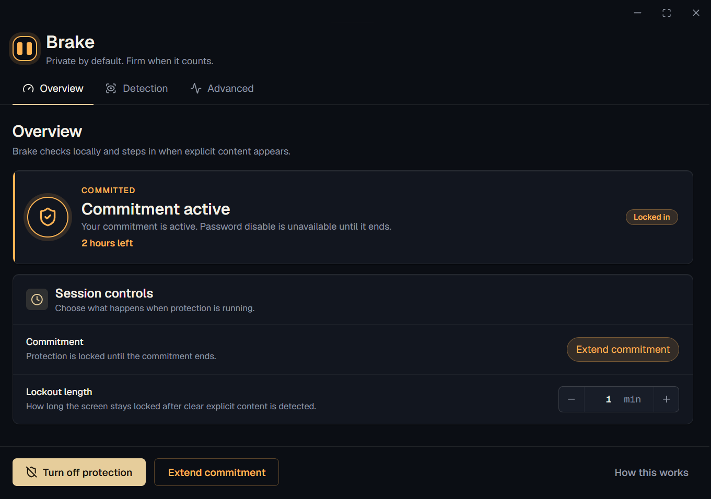

Brake
Local screen accountability for explicit content. Brake checks your screen on your computer and steps in with a lockout when clear explicit content appears.
Free, local, source-available. No account, no sync, no screenshots uploaded.

What Brake does
Brake is not a website blocker. It watches locally and creates friction when explicit content appears on screen.
Screen checks run on your Windows PC. Screenshots are not uploaded, saved, or sent to a server.
Clear explicit content triggers a full lockout. Repeated lockouts within 24 hours can make the next one longer.
Optional commitments stop your password from turning protection off before the commitment ends.
Private by design
Brake works entirely on your computer. There is no account, no cloud dashboard, no telemetry, and no screenshot upload pipeline.
Install and use Brake without sign-in.
Your local settings stay on your PC.
Read the code before installing.
Detection logs store labels and confidence values, not screenshots.
Set up once, then leave it running
Install the Windows beta, save your recovery code, turn on protection, and optionally lock in a commitment.
Download BrakeSetup.exe, run it, and approve the Windows admin prompt.
Keep it somewhere safe, or intentionally make it harder to reach for stronger commitment.
Set your password and choose how long a lockout should last.
Help shape the beta
If Brake misses something, reacts too aggressively, or the install flow feels confusing, report it on GitHub.